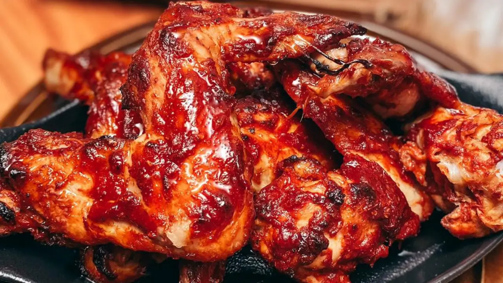

Alitas de Pollo Picantes

Ingredientes
- 8 Alitas de pollo
- 3 cdas de Kétchup
- Una cda de Salsa picante
- Una cdta de Pimentón ahumado
- Una cdta de Paprika
- Una cdta de Ajo en polvo
- Harina c/n
- Vinagre
- Una cda de Almidón de maíz
- Sal y pimienta c/n
- Una cdta de Azúcar
- Una cda de Manteca
- Aceite neutro para freir
Procedimiento
- Cortar las alitas por las articulaciones, reservar el primer tramo que tiene forma de “patita”. Hacer un
corte en el extremo inferior.
- Retirar la piel ayudándose con una servilleta. Con un cuchillo, llevar toda la carne hasta el extremo
superior dejando la mayor parte del hueso al descubierto. Tienen que quedar como un “chupetín”.
- Condimentar en un bowl con sal, pimienta, harina, pimentón ahumado y paprika. Mezclar bien con la mano y
freír en abundante aceite.
- Para la salsa, en una olla pequeña poner manteca, kétchup, salsa picante, azúcar, vinagre, ajo en polvo,
pimentón ahumado, paprika y una cucharada de almidón de maíz. Mezclar bien y calentar hasta que espese.
- Retirar las alitas del aceite, secar con papel para quitar el aceite excedente, salsear y servir.